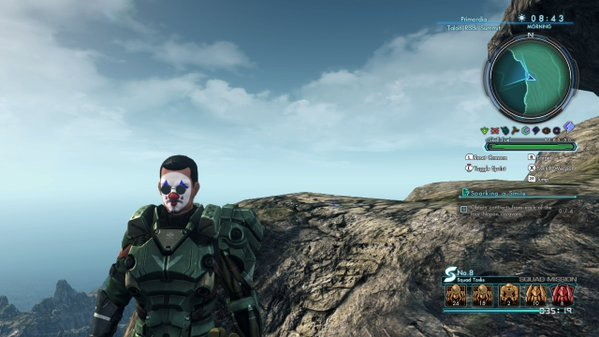

I wasn't a fan of the original Xenoblade, and a lot of the issues with that game have carried over into the sequel. The combat is too simple, the characters are built atop a mountain of tropes, and the multitude of quests carry the same tedium you'd commonly find in an MMO. Despite all of that, the 70 hours I poured into this game passed by in a blink. Even with the main story completed, it's still a joy to freely roam around the gorgeous environments populated across Mira. The game's world is filled to the brim with secrets. Of all that could be said about it, this game nails the formula of stumbling into an area and gradually depleting the supply of treasure from its every knook and cranny.
In my mind, the changes done to player movement have allowed X to succeed where the original failed. Your character does an instant zero to sixty the moment you hit the sprint button and can leap high enough to scale a three story building. This struck me as a bit comical the first time I saw it, especially for my character who adorns the sad clown makeup as his war paint.
Yet there's no denying how amazingly fluid this feels.